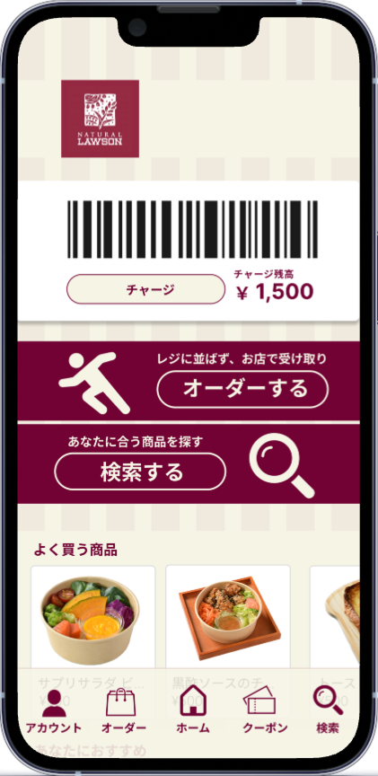
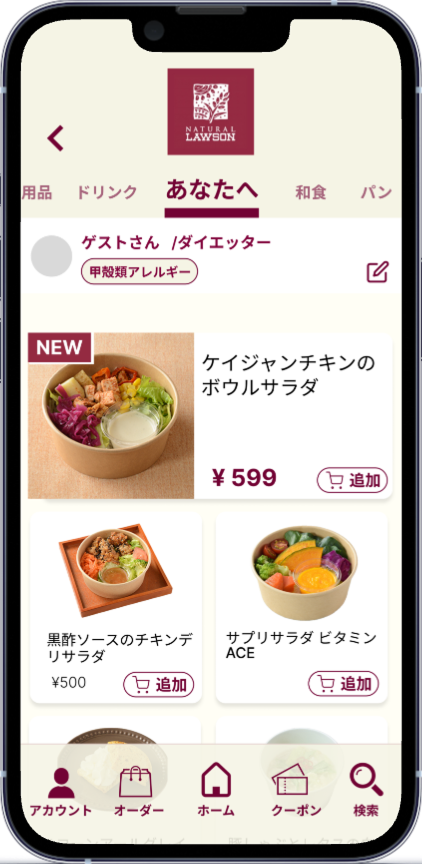

コンビニ モバイルオーダー構想画面
健康志向の方をターゲットにした『ナチュラルローソン』のモバイルオーダーアプリのUIを設計しました。
コンビニという特性上、幅広い世代の方が利用することを想定し、ボタンを大きく、視認性を重視したデザインにしています。
また、自分のアレルギー情報を登録すると、その成分を含まない食品だけが表示される機能を新たに提案し、より安心して利用できるアプリを目指しました。
全体のトーンは“ナチュラルでやさしく、そっと癒される”ような配色を意識しました。

